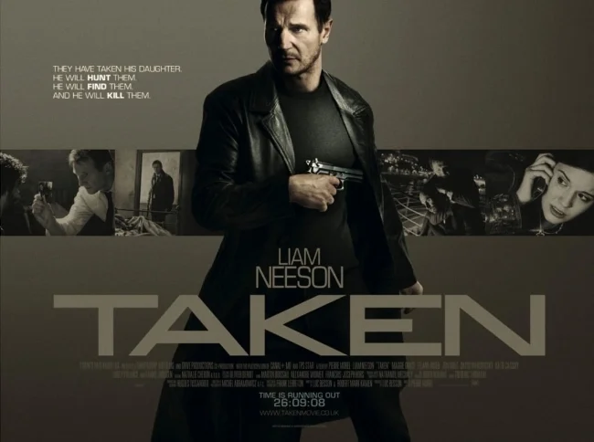
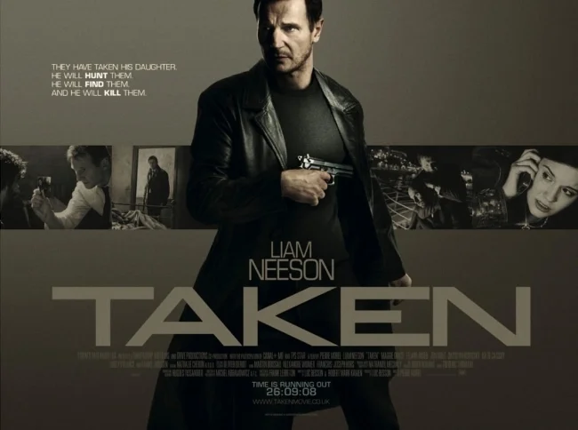

TAKEN
 

Former CIA operative Bryan Mills lives a quiet life until his daughter Kim is kidnapped by human traffickers while traveling in Paris. With limited time and only his particular set of skills, Bryan launches a relentless mission to find her. Following a trail of danger and corruption, he fights through criminal networks in a race against the clock, determined to bring his daughter home safely—no matter the cost.
Actors and Characters
Liam Neeson – Bryan Mills
Maggie Grace – Kim Mills
Famke Janssen – Lenore
Xander Berkeley – Stuart
Katie Cassidy – Amanda
PG 16